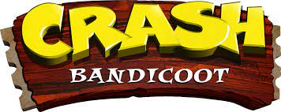
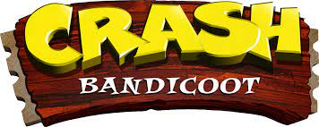

Welcome to our time travel website! Here you can sit back and relax and enjoy learning about all the old popular video games your parents used to play when they were your age. The world of gaming was very different back in the day and evolved to what it was today. Many games are still existent today and were first created in the early times of the internet. Such as Super Mario, Jumpan, Pacman, Sonic. While touring this website the user will be given the oppurnity to learn more about the history of their favorite games!
One of the worlds most well known charters was (believe it or not) BORN IN THE 1990S! Sonic the Hedgehog was a video game that came out to introduce a theme of being fast and speedy along with its catchy style for music. Sonic the Hedgehog played the role of collecting golden rings and go through many levels in order to reach his rival, Dr.Eggman. Dr. Eggman would capture inocent cute animals and use them to turn them into evil minions. Sonic wouldnt let that happen on his watch!
Although Pacman was created in the 1980s, it still carried out heavly to the 1990s even till today on our cellphones. Pacman himself was one hungry man, all he wanted to do was eat, eat and eat! His mission was to eat as many dots as he could in order to gain the energy of eatting the evil ghosts who were trying to eat him. The game can be classfied as a classical old video game that eveyone still loves and plays.
Crash bandicoot was defitnely one of the more advanced games that came out in the 1990s. The game consisted of a slick marsupial who had the ultimate goal of being your typical fictional superhero. The user would use him to go through so many different obsticales and enimines in order to finally be able to reach and defeat his rival Dr. Neo Cortex.
And last but not least, my favorite, The Super Mario Bros! (I dont know if you can tell their my favorite or not already) but the Mario brothers were already well known coming in the 1990s and are even more well known today! You might be thinking about the recent movie Nitendo made not to long ago about them, crazy right? Anyways, Mario and his brother Lugie were on a mission to save princess peaches and had to go through many obstacales to retrive her from the evil villan, Bowser (you know the evil turle). They had to go through many different places in order to reach the destination where Princess Peaches was being held. Then the user faced the challege of fighitng browser and if sucessful, Peaches would be saved.


 
